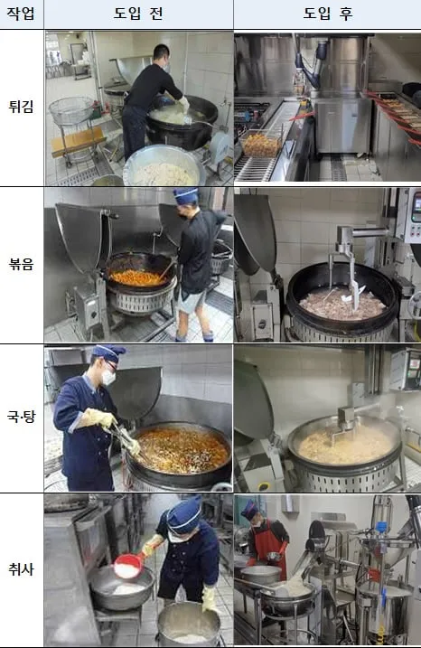
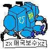

요리를 못해서 저기 들어갔대...

요리를 못해서 저기 들어갔대...

취사병출신인데 취사는 장단점이 있음 ㅋㅋ
취사가 무조건 다른 보직보다 유리한 사람의 필수 조건 1가지
자신이 3km 뜀걸음을 단 한번도 걷지않고 완주가 가능한 사람이다 << 무조건 취사 하지말고 보병이 나음
근데 이걸 못하는 체력이다? 그럼 취사가 나음
취사는 산타고 행군하고 뛰어다니고 이런걸 안하기때문에 체력 약한인간이면 군생활내내 스트레스 덜 받음
취사병은 다른건 모르겠는데 아침에 일찍일어나야 하는게 존나 힘든것 같음
그리고 또 산으로 식사추진이 가능한가 여부도 능력에 들어감 ㅋㅋㅋㅋ
근데 왜 3키로를 뛸수잇는 인간이면 취사를 추천 안하냐?
취사는 쎄게 한대 맞는걸 안하는 대신 약하게 10대를 맞는 업무기 때문임
수만가지 이유중에 대표적인거 딱 한가지만 말하면
훈련 나가면 3시 30분 기상 ->4시 취사장 도착후 트레일러에 불키기 (밥하는데 3시간걸림) -> 7시에 오전근무자 밥을 줘야하기땜에 7시에 밥을 빼야함.
아까 말햇듯 밥하는데3시간 걸리기때문에 8시30분엔 점심 준비를 시작해야함
이게 뭔 뜻이냐면 끼니 사이에 쉴 시간이 없다는것. 부식 청소 잡일 주둔지 관리 걍 주 업무사이에 잡일들이 줫나게 많아서 그냥 기상하고 취침할때까지 계속 일밖에없음.
그럼에도 취사가 산에서 구르는 보병보다 심장뛰는 일이 없기 때문에 체력이 약한 애들은 보병보단 취사가 나음
취사병일과는 부대별로 차이가 엄청 심함. 대대가 작은곳이면 쉬운편이고 큰곳이면 힘든편임
아침에 일찍 일어나는것도 솔직히말해서 불침번 말번이 군생활 내내 있다고 생각하면 되는데 대신 탄약고 위병소 불침번 하나도안하잖아? 그리고 아침조회도 안함 연병장도 안뛰고 뭐 온갖 연병장 서서 하는 아침행사들싹다 열외고 다 장단점이 있는거임
휴가 같은경우 분기마다 3박4일 1개씩 나오는데 취사분대가 5명이면 얘내가 분기마다 휴가를 5번 나가야하면 총 5주가 걸리잖아 근데 분기는 3달이 1분기니 3달안에 5명이 휴가를 나가야하는데
너희도알다시피 군대는 휴가를 나갈수잇는날 없는날이 불규칙적으로 상황이 바뀌고 해서 휴가가 밀리기 시작하면 골치아프게 꼬이기도함 나중엔 말차에 못나간거 붙여서나가고 그럼
마지막으로 말하는데
취사의 최고 장점이 하나 있다면 취사병 분대는 일과 내내 중대랑 격리되어 분리되어 생활을 한다는거임
즉 간부를 마주칠 일이 다른 병사보다 적다는것, 이게 행정병이나 작전과애들이랑 완전 상반되는건데
행정병이 결코 편한게 아니거든 하루종일 간부장교새끼들 옆에두고 살아야해서
그리고 취사가 주말에 일한다는것도 ㅈㄴ 웃긴게 사실 주말 일과는 조또 별거 아니기때문임
왜냐면 주말엔 간부가 없기땜에 총 식수인원에서 간부 수십명 식사가 빠짐
그리고 눈치볼인간들이 없으니 청소도 대강하고 밥만빼면 다음 밥 할때까지 할일이 아예없음.
그때 휴게실에서 드러누워 자거나 하는거임
식수인원 얼마임?
개꿀부대에서 취사병했네
주말일과가 조또별거아니라니...내가 있던부대는 개붕이랑다른부대인가보오 조리병 8명 이었고 해군보직상 식수인원이 가변이었는데 출동 이 주말상관없어 우리부대는 월화수목금금금 이었는데..
그래도 조리병이좋은 이유는 우린 음식 따로해먹었었음 짬밥보다 좀더 맛있게? 그리고 5주에 2박3일외박도줬고
밥하는데 3시간 걸림이 말이 되나?
밥을 뭘로 했길래
500인분하면 그렇게 걸리던데
상병 이상이면 항상 누워있더만 사령부 의무병이라 자주 놀러가고 친했는데 일이병만 일하고 상병장은 항상 티비보고 누워있더라 간부식당은 빡세긴 했음
밥하는데 3시간은 무슨 훈련소임??
무릎아파..
너 그거 스스로 할만하다고 뇌이징 혹은 취사라이팅 당한게 아닐까
간부랑 지내다보면 친해져서 보통 가라치고
걍 작업나간다하고 가서 밍기적거리며 놀면 그만 훈련도 뭐 수백이서 같이하는거라 개인이 하는건 뭐 엄청난것도없음.
그리고 솔직히 이름만 훈련이지 다신 못해볼 재밌는일, 에피소드도 많음ㅋㅋ
난 취사병 군단사령부 사병식당서 했는데 단장이 훈련 열외0 기조라 행군다하고 야전취사 다하고 훈련참가하고 행군복귀하고 쉬지않고 취사하고 했음 매일 식당에 대령이상이 급양으로 밥먹으러오고 원스타가 러닝하는 코스에 취사장이 있음
부사관들 밥값아낀다고 존나게 많이와서 to 나는거 이상으로 취사해야되서 빡샘
뭐든 케바케긴함
아침에 일찍일어나서 쌀포대 존나옮긴다던데
취사병 동기에게 들은 취사병의 단점.
1. 주말이 없다.
2. 매일 새벽에 일어나야 한다.
3. 몸에서 짬냄세 난다.
그냥 소총수/통신/포병 보직보다 더 힘들어보임.
특히 1번이 쥐약인듯.
취사병 암만봐도 헬보직인데 왜 꿀이라는 얘기가 도는지 모르겠음
그야 짬 차면 진짜 투명인간도 쌉가능이니까..
이런! 짬찌때 노예생활 하다가 갑자기 병장되니까 선진병영한답시고 급양관이 들어와서 밀착마크하네요!
육군은 아직도 취사병이 조리하는겨?
취사병의 로망은 독립중대 소규모 취사장이다
기억해라
해안경비 소초
매일매일이 취사병 오마카세
독립소대 개꿀
그럼 취사병은 이제 많이 안 뽑겠네
취사지원이라고 종종 나갔는데.
새벽에 일어나서 밥짓고, 치우고 잠.
점심에 일어나서 밥짓고, 치우고 잠.
저녁에 일어나서 밥짓고, 치우고 막사 와서 좀있다가 잠.
할게 못된다 생각했었음
취사병이 힘든게 뭔지아냐?
아침 일찍 일어나는거?
저녁 늦게 끝나는거?
ㄴㄴ 월화수목금금금 다시 월화수목금금금
이게 빡인거임
서비터가 되어버린 ㄷㄷ
사진 사이즈 안 맞는 거 ㅋㅋㅋㅋㅋㅋㅋㅋㅋㅋㅋㅋㅋㅋㅋㅋㅋㅋㅋㅋㅋ
좃문하사때 취사쪽 지원이랑 부식선탑 몇번 했는데 스케쥴이 진짜 지옥이더만..
배식 끝나고 잠깐 텀에는 다음 식사 대비 재료 손질 해야 하고
해군 조리병은 더 헬이다 왠줄 아냐?
전투배치하면 앞치마 입은채로 카포크 차고 나가서 소병기 잡아야됨
조리병은 훈련 열외아니냐고? 좆까 해전에서 열외가 어딨어 배가 침몰하는데 제육볶고있을거냐고~
그럼 전투배치 끝나고나면? 굶주린 승조원들이 대기하고 있지, 다시 조빠지게 삽돌리러 가야된다
그러다 파도치고 배 롤링타서 담아놨던 반찬 다 뒤집어지면? 뭘어째 다시만들어야지 시발ㅋㅋㅋㅋㅋㅋㅋㅋㅋㅋㅋㅋㅋㅋ
취사병 개꿀이라고 하는 새끼들은 좆에 구멍을 내야된다고 생각함
와 다른취사병들은 맨날 새벽에 일어남? 우린 한번에 3명씩만 새벽기상해서 그렇게 8~9명이 돌아가면서 했는데 주말에도 토요일엔 절반은 아침만 하고 쉬고 일요일엔 또 나머지가 아침만하고 쉬고
그건 인원이 많아서 아닐까
니조랄
야전 취사가 진짜 개헬이던데